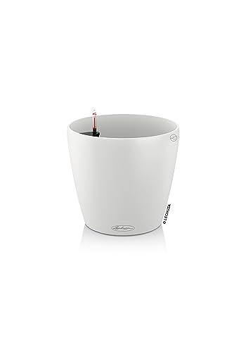

Mejores macetas para huerto urbano en balcón
El tamaño mínimo para hortalizas es 30 cm de profundidad. Más grande siempre es mejor.
 🪴
🪴
Maceta textil con aireación
- Airea las raíces, sin encharcamiento
- Ideal para tomates, pimientos, pepinos
- HORTOSOL 50 litros
5,95€ · 4,5★ 179 reseñas
🛒 Ver en Amazon
 🪴
🪴
Maceta rígida con plato
- Plato incluido
- Aguanta bien el exterior
- TECHZOCO 40 cm
~12€ · 4,7★ 391 reseñas
🛒 Ver en Amazon

🪴Maceta autorriego Lechuza
- Depósito de agua en la base
- Se riega sola varios días
- Ideal si viajas o te olvidas de regar
~25€
🛒 Ver en Amazon
 🪴
🪴
Jardinera de barandilla
- Se engancha sin ocupar suelo
- Ideal para aromáticas colgantes
- Albahaca, perejil, tomillo
8–20€
🛒 Ver en Amazon
 🪴
🪴
Estantería de cultivo vertical
- Multiplica x3 el espacio cultivable
- Con bandejas de recogida
- Ideal para balcones pequeños
25–60€
🛒 Ver en Amazon